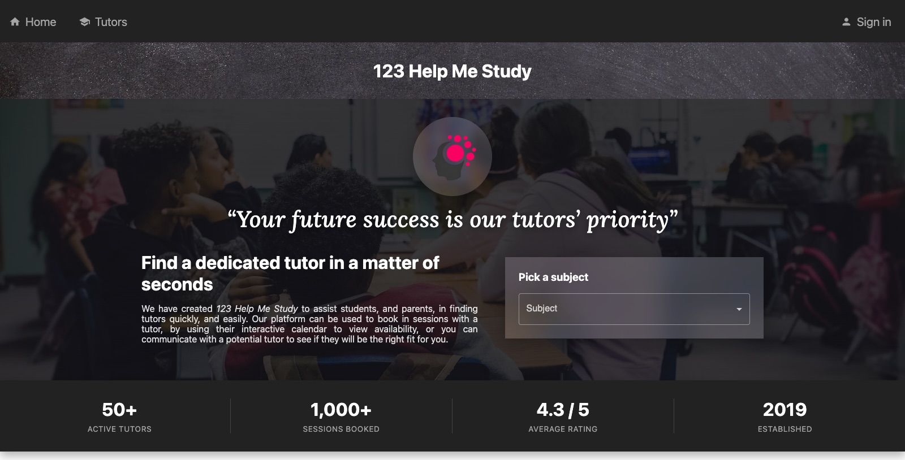
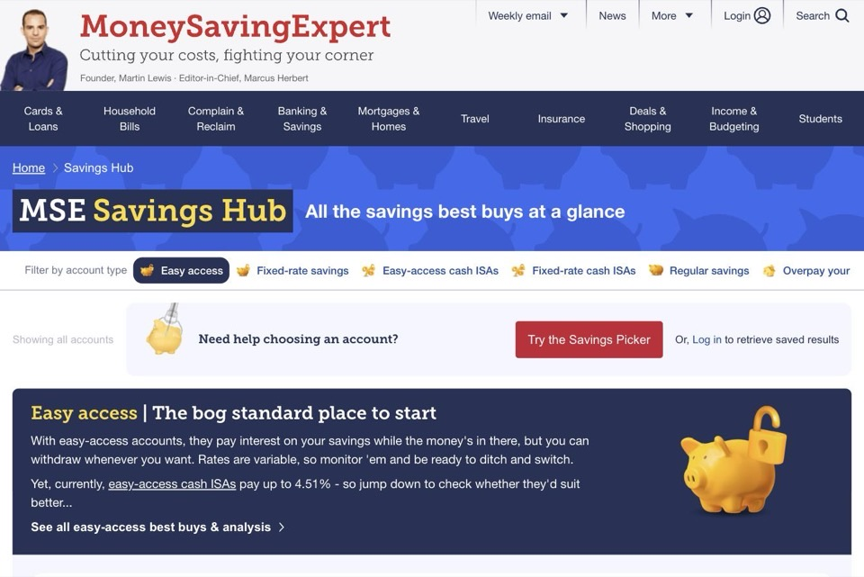
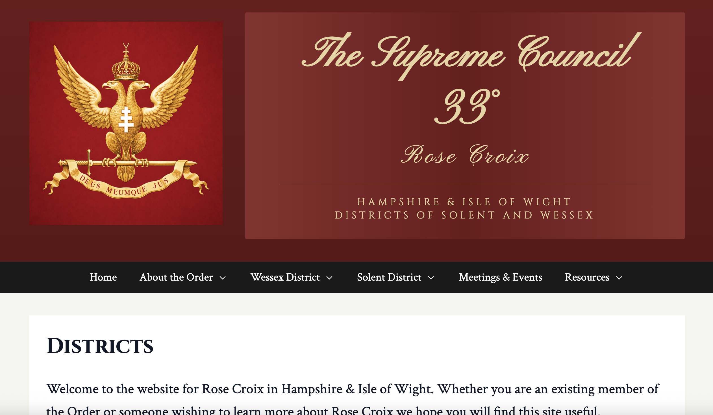
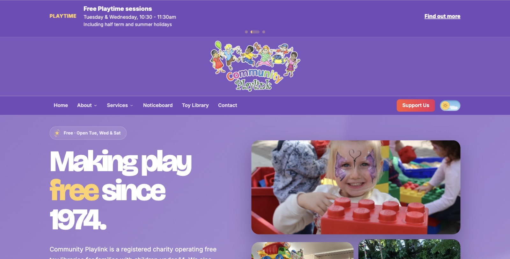
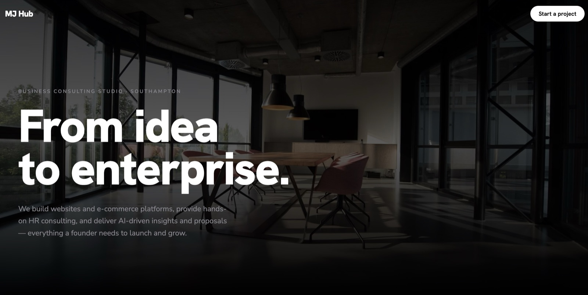

NEED A WEBSITE?
Let's Build Something Amazing Together
A revolutionary online tutor marketplace platform designed to empower educators with complete flexibility. Work anywhere, anytime, and keep 100% of your hourly rate—no platform fees, no middlemen, just pure earning potential. Connecting students with passionate tutors while giving educators the freedom they deserve.

An innovative interactive savings recommendation hub built while leading a development team for a previous employer. Though no longer actively maintained, I architected and implemented the groundbreaking foundation—leveraging Cloudflare edge computing for lightning-fast performance and building the dynamic, user-centric features that power intelligent savings insights. A testament to modern web architecture at scale.

The official digital hub for the Rose Croix in the province of Hampshire and Isle of Wight. This comprehensive informational website keeps members and visitors connected with real-time event calendars, announcements, and organisational updates—bridging tradition with modern digital accessibility.

The digital home of Community Playlink, a registered charity running free toy libraries and PLAYTIME sessions for families across Southampton. The site helps parents and carers browse the toy index, discover toddler groups and early-years services, and connect with a charity dedicated to empowering children through play—built to be warm, accessible, and easy to navigate for the families who rely on it.

MJ Hub is a business consulting studio based in Southampton that I run and actively manage with a business partner, taking founders from idea to enterprise. The site captures leads for website and e-commerce builds, hands-on HR consulting, and AI-driven insights and proposals—designed to be engaging and conversion-focused for founders exploring what MJ Hub can build for them.

FeeNix Mobile Phone
Pioneering a revolutionary open-source mobile phone that breaks free from traditional smartphone constraints. Built on a custom Linux-based architecture specifically optimised to run on the Raspberry Pi Zero 2W with integrated mobile SIM capabilities, FeeNix represents the convergence of open-source philosophy and practical mobile computing. The device features a meticulously crafted custom user interface that seamlessly bridges the Linux and Android ecosystems, enabling users to install and run Android applications while maintaining full control over their device at the kernel level. This isn't just another Linux phone—it's a complete reimagining of what a mobile device can be when you combine the flexibility of ARM-based computing, the power of open-source software, and the practicality of Android app compatibility. The project encompasses custom PCB design for optimal component integration, low-level driver development for hardware interfacing, and an intuitive UI framework that makes advanced features accessible to everyday users. FeeNix is designed for privacy-conscious individuals, developers who want full device control, and anyone who believes in the right to truly own their technology. Currently in active development with working prototypes demonstrating voice calls, data connectivity, and seamless Android app execution on pure Linux infrastructure.
Open eCommerce
Democratising online commerce through a groundbreaking serverless architecture that delivers enterprise-grade eCommerce capabilities at virtually no cost. Open eCommerce leverages the edge computing power of Cloudflare Workers as an intelligent proxy layer combined with Google Apps Script to expose a suite of flexible, production-ready API endpoints. This innovative approach transforms traditional eCommerce infrastructure—what typically costs thousands in monthly hosting, database management, and scaling becomes accessible to anyone with an internet connection. The system operates as a unified, massive-scale eCommerce platform while maintaining complete data segregation per entity, allowing thousands of independent businesses to share the same robust infrastructure without compromising security or privacy. Each business gets their own isolated data namespace, custom configurations, and complete control over their storefront logic—all while benefiting from shared optimizations and zero infrastructure management. The platform is interface-agnostic, meaning developers can build custom storefronts using any framework (React, Vue, mobile apps) while leveraging battle-tested backend logic for product management, inventory tracking, order processing, and payment integration. By utilizing serverless technologies and smart caching strategies, the system automatically scales from zero to millions of requests without manual intervention or cost spikes. Perfect for startups, small businesses, and developers who want powerful eCommerce capabilities without the complexity and expense of traditional platforms.
Senior Software Engineer at CreateFuture
- Liaise with clients on requirements, architect solutions, and lead testing, documentation & handover.
- Line-manage and mentor engineers across all seniority levels; run the React Native community of practice.
- Security champion — ensuring delivery of fault-tolerant and secure systems.
- Fanduel: casino & racing reward system (React, React Native) and address verification service (Kafka, Node.js).
- Sky Betting & Gaming: draw-in card game (Node.js, Terraform, AWS).
- MoneySavingExpert: Savings Hub micro-frontend (Vue.js, Node.js Lambdas on AWS).
- Baillie Gifford Sidekick+: safe mode for AI chat platform (React, Python).
- Greenfield AI search platform for local government & social care ombudsman (Python, React, OpenAI on Azure).
- Delivered React Native enterprise training to ~70 engineers across seniority and tech backgrounds.
Software Engineer at Dotfive
- Architected and delivered client solutions across analytics and platform engineering.
- Built Elasticsearch & Kibana infrastructure on AWS; redeployed Node.js web-scraper & ETL pipeline with Airflow & Docker.
- Implemented Python Airflow DAGs processing Kafka financial data into PostgreSQL; Scala data transforms with S3.
- Custom Airflow UI extensions orchestrating 300+ jobs; FastAPI microservices deployed to ECS.
- Bespoke CI/CD build manager in Bash, Python, and Ruby (Chef); Pritunl VPN deployment.
- Greenfield React trading platform with Python-scripted data automation and ORM backend.
- Kubernetes restructuring for two platforms — focusing on HA, scalability, and health monitoring.
Software Developer at Cerberus Technologies
- Python backend operations and infrastructure automation.
- Automated VM provisioning & software installation via SQS, EC2, and Secrets Manager.
- Live billing-stat monitoring, automated failover, and error correction systems.
- Selenium-based automated deployment testing.
- Internal management UI for products and pricing (HTML, CSS, jQuery).
IT Manager at Lazy Susan
- Line-managed 7 employees; managed third-party suppliers for advertising, digital, and accounting.
- Administered 5 servers; built bespoke ETL pipeline consolidating ecommerce & accounting data into a data warehouse.
- Led development of custom Flask ERP integrating Shopware, Amazon, and eBay order management.
- Built a Digital Asset Management platform (JavaScript, HTML, CSS).
- Managed Google Search & Shopping, Facebook, and Amazon advertising channels.
- Delivered custom tooling to improve productivity across operations, finance, and customer services.
Senior Robotics Engineer & Operations MI at Utilita Energy
- Line-managed 3 engineers; recruited junior developers and developed team robotics capability.
- Led development & project management of the BluePrism RPA platform stack.
- Built SQL & Python server-side systems to dynamically adjust customer debt collection rates.
- Performed data manipulation on a CRM of ~500,000 customers to report on debt levels.
Forecast Analyst at Utilita Energy
- Collected and analysed weekly call-volume data for each customer services team.
- Produced weekly, monthly, and annual call-volume forecasts.
- Optimised staff distribution across shifts to hit SLAs within a 4-week planning window.
- Assumed staff resourcing role, allocating shifts for 550 employees.
Software Mentor / Private Tutor at 123 Help Me Study
- Provide 1-to-1 online lessons for students learning to code.
- Built and manage a personal website to attract new students.
- Partner with Code Institute to mentor students through HTML, CSS, JavaScript, and Python projects.